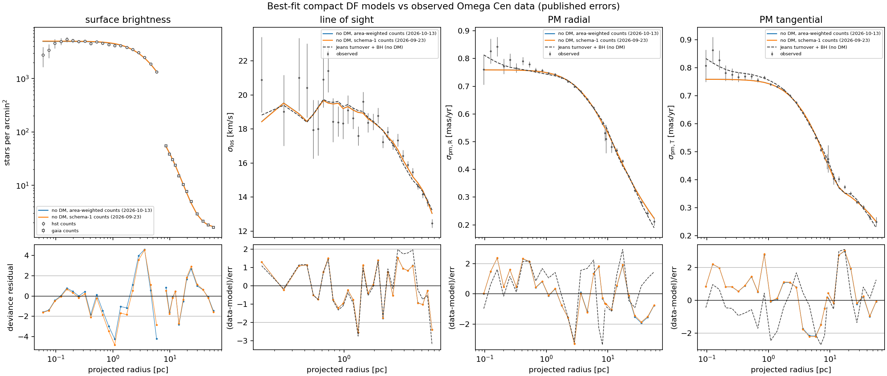
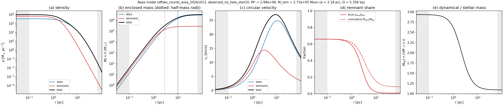
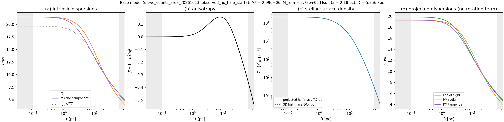
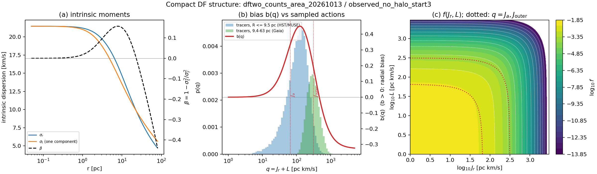

Results¶
Current findings by strand. Each links the report it rests on.
Base model fits¶
The reference result of the project: the base no-DM model (two-transition action DF for the stars, a Plummer remnant component, no dark matter, no central black hole) fitted jointly to 89 kinematic bins and the HST and Gaia star counts.
Current fit (2026-10-13)¶
Batch results/df/dftwo_counts_area_20261013, refitted after the count-likelihood
correction. All four valid starts reach the same minimum (objectives within
0.01); numerical validation passes; no parameter sits at a bound.
| Quantity | 2026-10-13 (current) | 2026-09-23 (superseded) |
|---|---|---|
| \(\chi^2_{\rm kin}\) (89 bins) | 156.4 (1.76 per bin) | 158.1 (1.78) |
| HST count deviance (20 bins) | 96.9 | 98.9 |
| Gaia count deviance (12 bins) | 25.2 | 26.3 |
| \(M_\star\) | 3.00×10⁶ M☉ | 3.00×10⁶ M☉ |
| \(M_{\rm rem}\), \(a_{\rm rem}\) | 2.73×10⁵ M☉, 2.18 pc | 2.62×10⁵ M☉, 2.15 pc |
| Distance | 5.356 kpc | 5.356 kpc |
| Mass per F625W < 19 star | 10.48 M☉ | 10.67 M☉ |
| Data-fit gate | fails | fails |

Star counts, MUSE line-of-sight and HST/Gaia proper-motion dispersions against the current (blue) and superseded (orange) fits; dashed: the earlier Jeans model. Bottom row: residuals (signed Poisson deviance residuals for the counts). Both fits are evaluated with the corrected count likelihood.
Comparison with the Jeans model (dashed curves)¶
Full description, figures and posterior: Jeans comparison model.
The dashed curves are the best rung-2 spherical Jeans fit without dark matter
(results/fits/rung2_K1_turnover), the best model of the earlier
Jeans ladder.
Both models are fitted to the same 89-bin kinematic snapshot, so their
kinematic χ² compare directly; the Jeans fit uses a fixed light profile (an MGE
of the Trager+1995 profile joined to HST star counts) instead of the Poisson
star counts.
| Jeans (rung 2, no DM) | DF base model | |
|---|---|---|
| Stellar tracer and mass | MGE light profile, mass-to-light free | self-consistent action DF |
| Free stellar parameters | \(M_\star\) only (density shape fixed by the light) | \(M_\star\) and six DF parameters (shape fitted to the counts) |
| Anisotropy | turnover β(r): β₀ = −0.50 (centre) → +0.20 → −0.98 (outside) | isotropic core → +0.15 near 8 pc → −0.53 at 100 pc |
| Central black hole | 4.4×10⁴ M☉ (16–84%: 3.9–4.6×10⁴) | none |
| \(M_\star\) | 2.37×10⁶ M☉ | 3.00×10⁶ M☉ |
| Remnants (Plummer) | 7.7×10⁵ M☉, a = 5.7 pc | 2.7×10⁵ M☉, a = 2.2 pc |
| Total mass | 3.18×10⁶ M☉ | 3.26×10⁶ M☉ |
| \(M_\star/L_V\), \(M_{\rm tot}/L_V\) | 2.0, 2.7 (ML); 2.3, 2.8 (median) | 2.6, 2.8 |
| Distance | 5.34 kpc | 5.36 kpc |
| χ² (per bin) | Jeans | DF |
|---|---|---|
| HST PM radial (21) | 61.8 (2.94) | 42.6 (2.03) |
| HST PM tangential (21) | 36.6 (1.74) | 39.8 (1.89) |
| MUSE LOS (29) | 51.7 (1.78) | 38.1 (1.31) |
| Gaia PM radial (9) | 16.9 (1.88) | 14.4 (1.60) |
| Gaia PM tangential (9) | 23.0 (2.56) | 21.5 (2.39) |
| Total (89) | 190.0 | 156.4 |
- The DF fits better overall (Δχ² = 34) and in every dataset except the HST tangential proper motions.
- The Jeans model follows the central rise of the HST proper-motion dispersions inside 0.3 pc (~11″), which the DF, with an isotropic core and no black hole, stays below by 1.5–2.4σ in several bins: χ² = 7.3 (Jeans) against 21.5 (DF) for those 10 bins. This is where the black hole matters.
- It pays for this at intermediate radii: at 2–20 pc (36 bins of HST, MUSE and Gaia) χ² = 122.2 (Jeans) against 77.8 (DF), mostly in the HST radial proper motions (40.2 against 20.2) and the MUSE line-of-sight dispersions (30.9 against 18.7).
- The black hole is tied to an imposed anisotropy. A cored stellar density around a point mass needs β₀ ≤ −½ for any non-negative DF; the prior enforces it and the fit sits at the bound (β₀ = −0.503). Even so, under the standard separable construction the Jeans model has no non-negative DF at 0.02–0.18 pc (89.7% of posterior draws fail; DF consistency audit). The DF base model is non-negative by construction.
- Both put about the same total mass in the cluster (3.2–3.3×10⁶ M☉) but divide it differently: the Jeans fit has 20% less stellar mass and nearly three times more remnant mass, spread over a 2.5× larger scale. This is the same stars-versus-dark-mass degeneracy seen within the DF fits.
- Why \(M_\star\) differs by 11% at the same total mass. In neither model is the stellar mass fixed by the light or the counts; it is the normalisation the kinematics leave after the remnants (and, for Jeans, the black hole and the imposed central anisotropy) take their share. The remnant mass is close to the total minus \(M_\star\), so with remnants at 8–17% of the total, a 1% change in \(M_\star\) moves \(M_{\rm rem}\) by ~10%.
- A central black hole was not supported by the DF fits on binned data (September step 3); whether the inner rise needs one, or radially biased central orbits, or mass segregation, is not settled.
Mass components¶

Current fit, by component. (a) Density; (b) enclosed mass with the half-mass radii dotted; (c) circular velocity; (d) remnant share, local (\(\rho_{\rm rem}/\rho_{\rm tot}\)) and cumulative (\(M_{\rm rem}/M_{\rm tot}\)); (e) dynamical-to-stellar mass ratio. Grey: outside the radial range of the kinematic data (0.1–63 pc).
| r (pc) | Stars (10⁶ M☉) | Remnants (10⁶ M☉) | Total (10⁶ M☉) | Remnant share of M(<r) |
|---|---|---|---|---|
| 1 | 0.012 | 0.020 | 0.032 | 62% |
| 3 | 0.201 | 0.145 | 0.346 | 42% |
| 10 | 1.436 | 0.255 | 1.691 | 15% |
| 30 | 2.716 | 0.271 | 2.987 | 9% |
| 100 | 2.987 | 0.273 | 3.260 | 8% |
- Two components with different scales. The stars have a 3D half-mass radius of 10.4 pc (projected 7.7 pc; the Baumgardt database lists r_h = 7.56 pc at 5.43 kpc, i.e. 7.46 pc at the fitted distance); the remnant Plummer has 2.8 pc.
- The remnants dominate the core. They are 66% of the central density (6.0×10³ against 3.2×10³ M☉ pc⁻³ for the stars at 0.3 pc). The stars take over the local density near 1.5 pc (remnants 59% at 1 pc, 26% at 3 pc) and the enclosed mass near 2 pc.
- Mass-to-light-following mass. \(M_{\rm tot}(<r)/M_\star(<r)\) falls from 2.9 in the centre to 1.09 overall. This is the quantity a mass-segregated stellar population could also produce.
- Circular velocity peaks at 27.0 km/s at 9.0 pc; the stars alone peak at ~25 km/s near 10 pc, the remnants at ~14 km/s near 3 pc. The central escape speed is 68 km/s.
- The total inside 10 pc differs from the superseded fit by −0.7%.
Internal kinematics¶

(a) Intrinsic radial and tangential (one component) dispersions, with the local escape speed/√12 for scale; (b) anisotropy β(r); (c) stellar surface density with the projected and 3D half-mass radii; (d) projected line-of-sight and proper-motion dispersions from the DF, before the published rotation is subtracted in the likelihood.
- Isotropic core, radial bias at intermediate radii, tangential outskirts. β = 0.00 at 0.3 pc, 0.09 at 3 pc, peaks at +0.15 near 8 pc, crosses zero near 22 pc, and reaches −0.08 at 30 pc and −0.53 at 100 pc.
- Central dispersion σ_r ≈ σ_t ≈ 21.4 km/s; σ_r = 14.7 and σ_t = 13.5 km/s at 10 pc.
- Projected dispersions in the core: 19.8 km/s along the line of sight and 19.3 km/s in each proper-motion component. The radial and tangential proper-motion profiles differ by ≲ 0.5 km/s inside 30 pc and separate in the tangentially biased outskirts.
Distribution function¶

(a) Intrinsic moments and β(r); (b) the anisotropy bias \(b(q)\), \(q=J_r+L\), over the action distributions of the stars in the HST/MUSE (R ≤ 9.5 pc) and Gaia (9.4–63 pc) ranges, with the two transitions \(J_a\) and \(J_{\rm outer}\) dotted; (c) \(f(J_r, L)\).
- The radial bias (b ≈ +0.45 at its peak) sits on the actions of the HST/MUSE stars; the tangential tail (b → −0.33) sits on the Gaia stars. The data constrain the DF over \(q\) ≈ 10–1000 pc km/s; outside that range its shape is extrapolated.
- \(f\) is smooth and monotonic in both actions, with no features at the transitions.
What the base fits establish¶
- No dark matter is needed to fit the kinematics and counts. A free cored halo goes to \(\rho_{20}=0\) (2026-09-23, old count likelihood).
- The total mass profile is constrained; its split is not. Mocks drawn from the base model recover the total mass to ±3% at 20 pc and ±5% over 2–40 pc, but stars trade against remnants plus halo through the count amplitude, and the recovered \(\rho_{20}\) scatters by ±0.7 M☉ pc⁻³.
- The answer depends on the stellar mass per counted star. Fixed at the photometric 8–9 M☉ per F625W < 19 star, the data prefer \(\rho_{20}\) ≈ 2–4; at the dynamical value (now 10.5) they prefer none. The photometric estimate (8.3–9.8 in the zones that dominate the kinematics) is not precise enough (~1 M☉ per star; ~0.3 is needed) to decide.
- The fit is not statistically acceptable. χ²_kin per bin is 1.76 against the gate of 1.3, and the HST count residuals are structured: data below the model near 1 pc and in the outermost HST bin (~6 pc), above it at 3–4 pc. Either the error bars are underestimated or the model lacks freedom (mass segregation, rotation, a different remnant shape); this is not yet separated.
Not yet rerun with the corrected count likelihood¶
The free-halo fit, the \(\rho_{20}\) profile, the mass-per-star scan and the mocks (all 2026-09-23). See Models and the DF observed-fit write-up (PDF); data analysis (PDF).
Dark-matter survival and tidal tails¶
- Restricted and live N-body runs of a no-DM and a DM model on Omega Cen's orbit (static McMillan17, 1.96 Gyr) give tails whose kinematics agree to 10%. The DM model loses 1.3–1.6× fewer stars. Neither difference is testable with the published tail data (Kuzma+2021, Kuzma+2026, Ibata+2019).
- Fitted halos are compact (r_s at the 5 pc bound) and traded against stellar mass, so across the kinematically allowed range the Jacobi radius at pericentre changes by ≤ 6.5%. Dark matter that could affect the tails lies beyond ~80–200 pc and is not constrained by the kinematics.
Reports: dynamical experiments, first batch (PDF), batch analysis, progenitor orbits, Section-11 tests, lifetime evolution (paused), DM capture constraints (PDF), N-body code assessment, N-body ICs.
Stream 54 (Fimbulthul) and the proper-motion knee¶
- Beyond φ1 ≈ 17° the stream bends in Gaia DR3 proper motion. No published model reproduces this, nor do sprays in static McMillan17 or DB98 hosts.
- A rotating Hunter+2024 bar bends the arm part-way and steepens the pmdec gradient. Bar angle 16° beats 28° by ~285 in ln L on held-out seeds (paired seed sd 101); the distal PM residual remains.
- The LMC (rigid MW + LMC, reflex frame, benchmarked against the Tango N-body runs) shifts distal pmra by 0.2–0.6 mas/yr, but a 0.03–0.05 mas/yr change in Omega Cen's PM absorbs it.
- Spiral forcing, the conditional likelihood's density dependence, the Chen+2024 escape law and both launch arms do not remove the mismatch.
- Backtracked in the barred host, the 13 knee RV stars connect to the cluster much worse than model controls (1.9–2.0 against ~1.1). This is a mismatch in the recent (≤ 700 Myr) fixed-potential models tested, not yet an exclusion.
Reports: PM refinement (current), knee investigation, diagnostic plan, fit campaign plan, experiments plan, stream-fitting methods review, stream distances literature.